Code
import numpy as np
import matplotlib.pyplot as plt
%matplotlib inline
import seaborn as sns
from matplotlib import patchesfig, ax = plt.subplots(ncols=3, figsize=(12, 4))
sns.heatmap(inp, annot=True, cbar=None, ax=ax[0], cmap='Purples')
sns.heatmap(filter_conv, annot=True, cbar=None, ax=ax[1], cmap='Purples')
g = ax[0]
rect = patches.Rectangle((0,0),3,3,linewidth=5,edgecolor='grey',facecolor='black', alpha=0.5)
# Add the patch to the Axes
g.add_patch(rect)
ax[0].set_title("Input")
ax[1].set_title("Filter")Text(0.5, 1.0, 'Filter')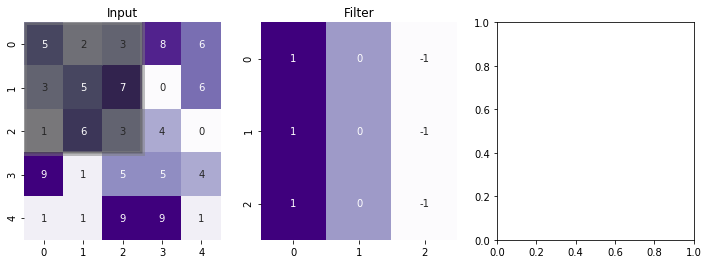
import numpy as np
import matplotlib.pyplot as plt
import matplotlib.ticker as mticker
import matplotlib.animation
#####################
# Array preparation
#####################
#input array
n = 6
p = 0
s = 2
f = 3
a = np.random.randint(0, 5, size=(n, n))
# kernel
kernel = np.tile([1, 0, -1], f).reshape(f, f)
#f = kernel.shape[0]
def create_animation(a, kernel, p, s, fname, frate, figsize=(8, 4)):
if p:
# visualization array (2 bigger in each direction)
va = np.zeros((a.shape[0]+2*p, a.shape[1]+2*p), dtype=int)
va[p:-p,p:-p] = a
va_color = np.zeros((a.shape[0]+2*p, a.shape[1]+2*p))
va_color[p:-p,p:-p] = 0.5
else:
va = a
va_color = np.zeros_like(a)
n = a.shape[0]
o_shape = np.floor_divide(n+2*p-f, s)+1
#output array
res = np.zeros((o_shape, o_shape))
#####################
# Create inital plot
#####################
fig = plt.figure(figsize=figsize)
def add_axes_inches(fig, rect):
w,h = fig.get_size_inches()
return fig.add_axes([rect[0]/w, rect[1]/h, rect[2]/w, rect[3]/h])
axwidth = 3.
cellsize = axwidth/va.shape[1]
axheight = cellsize*va.shape[0]
ax_va = add_axes_inches(fig, [cellsize, cellsize, axwidth, axheight])
ax_kernel = add_axes_inches(fig, [cellsize*2+axwidth,
(2+res.shape[0])*cellsize-kernel.shape[0]*cellsize,
kernel.shape[1]*cellsize,
kernel.shape[0]*cellsize])
ax_res = add_axes_inches(fig, [cellsize*3+axwidth+kernel.shape[1]*cellsize,
2*cellsize,
res.shape[1]*cellsize,
res.shape[0]*cellsize])
ax_kernel.set_title("Kernel", size=12)
im_va = ax_va.imshow(va_color, vmin=0., vmax=1.3, cmap="Blues")
ax_va.set_title("Image size: {}X{}\n Padding: {} and Strides: {}".format(n, n, p, s))
for i in range(va.shape[0]):
for j in range(va.shape[1]):
ax_va.text(j,i, va[i,j], va="center", ha="center")
ax_kernel.imshow(np.zeros_like(kernel), vmin=-1, vmax=1, cmap="Pastel1")
for i in range(kernel.shape[0]):
for j in range(kernel.shape[1]):
ax_kernel.text(j,i, kernel[i,j], va="center", ha="center")
im_res = ax_res.imshow(res, vmin=0, vmax=1.3, cmap="Greens")
res_texts = []
for i in range(res.shape[0]):
row = []
for j in range(res.shape[1]):
row.append(ax_res.text(j,i, "", va="center", ha="center"))
res_texts.append(row)
ax_res.set_title("Output size: {}X{}".format(n+2*p-f+1, n+2*p-f+1))
for ax in [ax_va, ax_kernel, ax_res]:
ax.tick_params(left=False, bottom=False, labelleft=False, labelbottom=False)
ax.yaxis.set_major_locator(mticker.IndexLocator(1,0))
ax.xaxis.set_major_locator(mticker.IndexLocator(1,0))
ax.grid(color="k")
###############
# Animation
###############
def init():
for row in res_texts:
for text in row:
text.set_text("")
def animate(ij):
i,j=ij
o = kernel.shape[1]//2
# calculate result
res_ij = (kernel*va[1+s*i-o:1+s*i+o+1, 1+s*j-o:1+s*j+o+1]).sum()
res_texts[i][j].set_text(res_ij)
# make colors
c = va_color.copy()
c[1+s*i-o:1+s*i+o+1, 1+s*j-o:1+s*j+o+1] = 1.
im_va.set_array(c)
r = res.copy()
r[i,j] = 1
im_res.set_array(r)
i,j = np.indices(res.shape)
ani = matplotlib.animation.FuncAnimation(fig, animate, init_func=init,
frames=zip(i.flat, j.flat), interval=frate)
ani.save(fname, writer="imagemagick")import numpy as np
import matplotlib.pyplot as plt
import matplotlib.ticker as mticker
import matplotlib.animation
#####################
# Array preparation
#####################
#input array
n = 6
p = 0
s = 2
f = 3
a = np.random.randint(0, 5, size=(n, n))
# kernel
kernel = np.tile([1, 0, -1], f).reshape(f, f)
#f = kernel.shape[0]
def create_static(a, kernel, p, s, fname, frate, figsize=(8, 4)):
if p:
# visualization array (2 bigger in each direction)
va = np.zeros((a.shape[0]+2*p, a.shape[1]+2*p), dtype=int)
va[p:-p,p:-p] = a
va_color = np.zeros((a.shape[0]+2*p, a.shape[1]+2*p))
va_color[p:-p,p:-p] = 0.5
else:
va = a
va_color = np.zeros_like(a)
n = a.shape[0]
o_shape = np.floor_divide(n+2*p-f, s)+1
#output array
res = np.zeros((o_shape, o_shape))
#####################
# Create inital plot
#####################
fig = plt.figure(figsize=figsize)
def add_axes_inches(fig, rect):
w,h = fig.get_size_inches()
return fig.add_axes([rect[0]/w, rect[1]/h, rect[2]/w, rect[3]/h])
axwidth = 3.
cellsize = axwidth/va.shape[1]
axheight = cellsize*va.shape[0]
ax_va = add_axes_inches(fig, [cellsize, cellsize, axwidth, axheight])
ax_kernel = add_axes_inches(fig, [cellsize*2+axwidth,
(2+res.shape[0])*cellsize-kernel.shape[0]*cellsize,
kernel.shape[1]*cellsize,
kernel.shape[0]*cellsize])
ax_res = add_axes_inches(fig, [cellsize*3+axwidth+kernel.shape[1]*cellsize,
2*cellsize,
res.shape[1]*cellsize,
res.shape[0]*cellsize])
ax_kernel.set_title("Kernel", size=12)
im_va = ax_va.imshow(va_color, vmin=0., vmax=1.3, cmap="Blues")
ax_va.set_title("Image size: {}X{}\n Padding: {} and Strides: {}".format(n, n, p, s))
for i in range(va.shape[0]):
for j in range(va.shape[1]):
ax_va.text(j,i, va[i,j], va="center", ha="center")
ax_kernel.imshow(np.zeros_like(kernel), vmin=-1, vmax=1, cmap="Pastel1")
for i in range(kernel.shape[0]):
for j in range(kernel.shape[1]):
ax_kernel.text(j,i, kernel[i,j], va="center", ha="center")
im_res = ax_res.imshow(res, vmin=0, vmax=1.3, cmap="Greens")
res_texts = []
for i in range(res.shape[0]):
row = []
for j in range(res.shape[1]):
row.append(ax_res.text(j,i, "", va="center", ha="center"))
res_texts.append(row)
ax_res.set_title("Output size: {}X{}".format(n+2*p-f+1, n+2*p-f+1))
for ax in [ax_va, ax_kernel, ax_res]:
ax.tick_params(left=False, bottom=False, labelleft=False, labelbottom=False)
ax.yaxis.set_major_locator(mticker.IndexLocator(1,0))
ax.xaxis.set_major_locator(mticker.IndexLocator(1,0))
ax.grid(color="k")
###############
# Animation
###############
def init():
for row in res_texts:
for text in row:
text.set_text("")
def animate(ij):
i,j=ij
o = kernel.shape[1]//2
# calculate result
res_ij = (kernel*va[1+s*i-o:1+s*i+o+1, 1+s*j-o:1+s*j+o+1]).sum()
res_texts[i][j].set_text(res_ij)
# make colors
c = va_color.copy()
c[1+s*i-o:1+s*i+o+1, 1+s*j-o:1+s*j+o+1] = 1.
im_va.set_array(c)
r = res.copy()
r[i,j] = 1
im_res.set_array(r)
i,j = np.indices(res.shape)
frames=zip(i.flat, j.flat)
animate(frames)
fig.savefig(fname)from keras import backend as K
# input image dimensions
img_rows, img_cols = 28, 28
# the data, split between train and test sets
(x_train, y_train), (x_test, y_test) = mnist.load_data()
if K.image_data_format() == 'channels_first':
x_train = x_train.reshape(x_train.shape[0], 1, img_rows, img_cols)
x_test = x_test.reshape(x_test.shape[0], 1, img_rows, img_cols)
input_shape = (1, img_rows, img_cols)
else:
x_train = x_train.reshape(x_train.shape[0], img_rows, img_cols, 1)
x_test = x_test.reshape(x_test.shape[0], img_rows, img_cols, 1)
input_shape = (img_rows, img_cols, 1)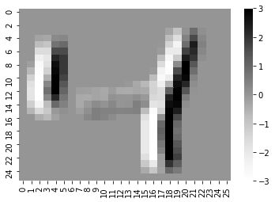
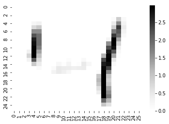
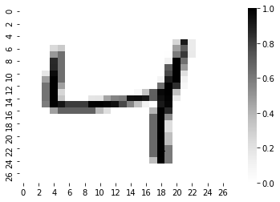
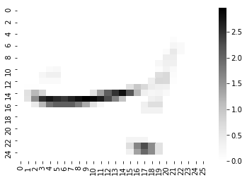
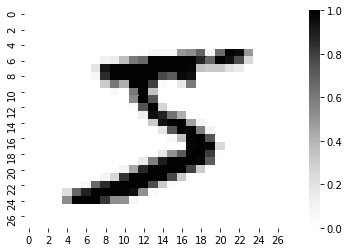
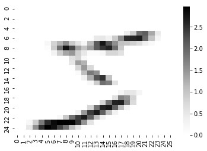
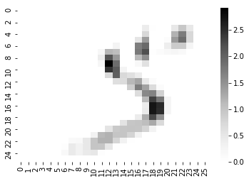
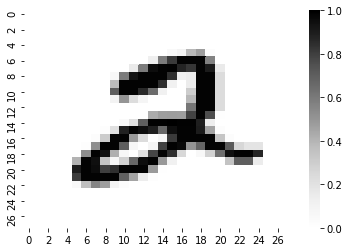
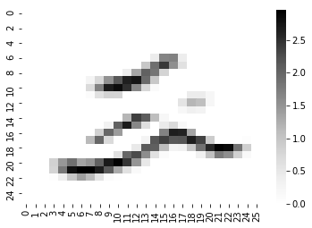
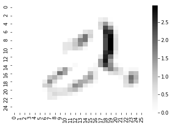
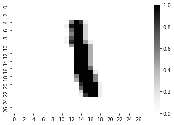
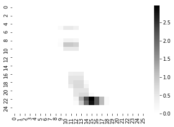
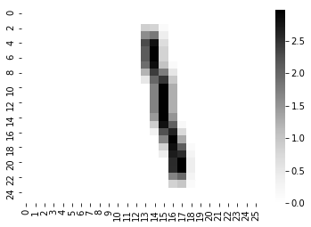
Downloading data from https://www.cs.toronto.edu/~kriz/cifar-10-python.tar.gz
170500096/170498071 [==============================] - 91s 1us/steparray([[[ 1., 1., 1.],
[ 0., 0., 0.],
[-1., -1., -1.]],
[[ 1., 1., 1.],
[ 0., 0., 0.],
[-1., -1., -1.]],
[[ 1., 1., 1.],
[ 0., 0., 0.],
[-1., -1., -1.]]])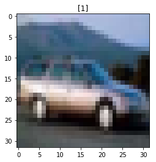
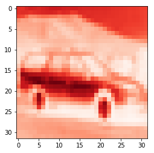
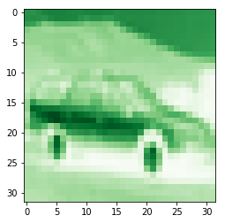
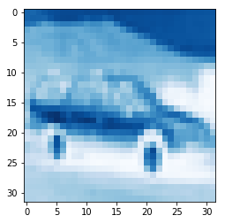
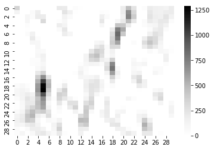
array([[[ 1., 0., -1.],
[ 1., 0., -1.],
[ 1., 0., -1.]],
[[ 1., 0., -1.],
[ 1., 0., -1.],
[ 1., 0., -1.]],
[[ 1., 0., -1.],
[ 1., 0., -1.],
[ 1., 0., -1.]]])array([[[1. , 0.5, 0. ],
[1. , 0.5, 0. ],
[1. , 0.5, 0. ]],
[[1. , 0.5, 0. ],
[1. , 0.5, 0. ],
[1. , 0.5, 0. ]],
[[1. , 0.5, 0. ],
[1. , 0.5, 0. ],
[1. , 0.5, 0. ]]])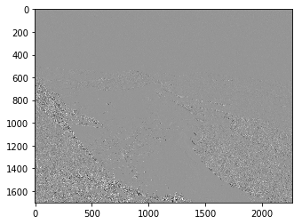
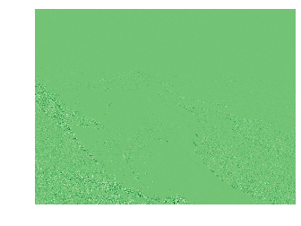
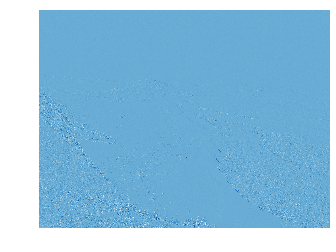
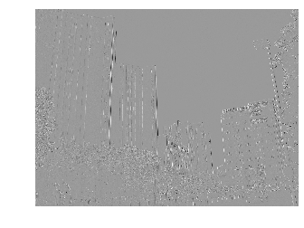
array([[ 1, 1, 1],
[ 0, 0, 0],
[-1, -1, -1]])